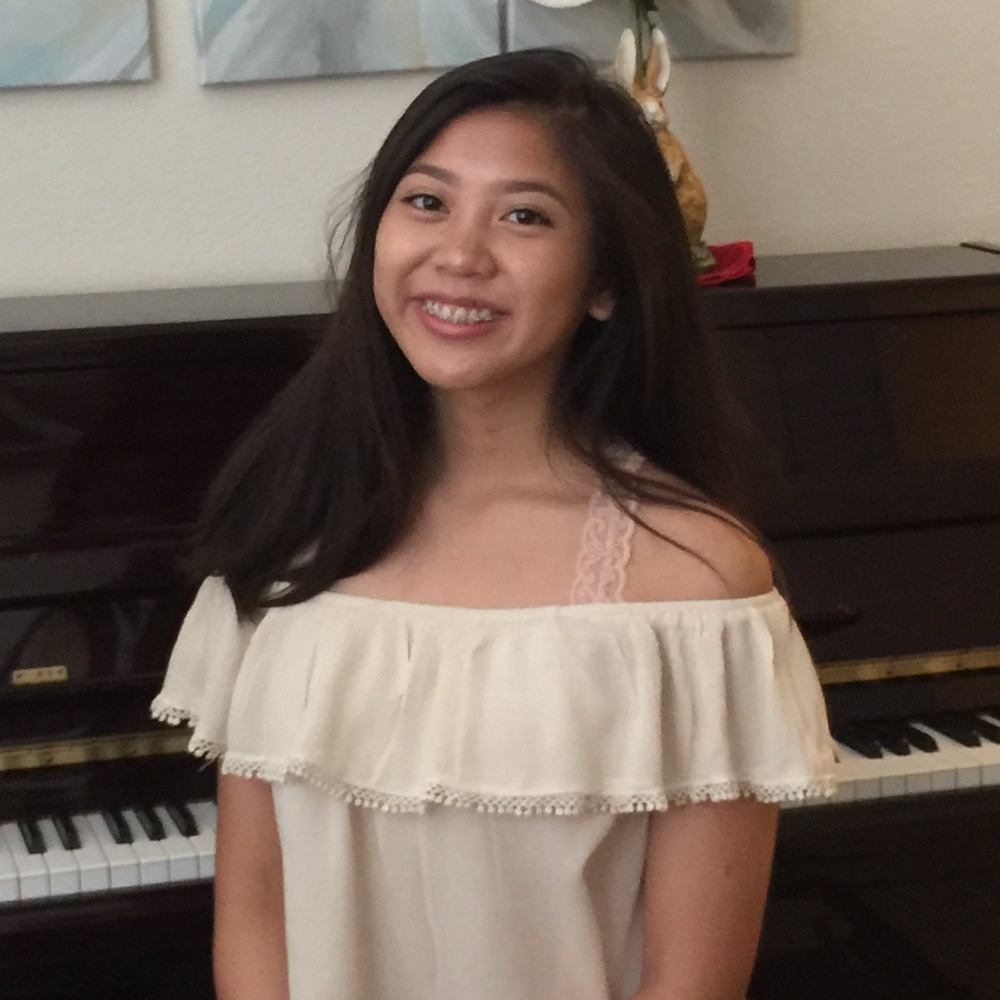
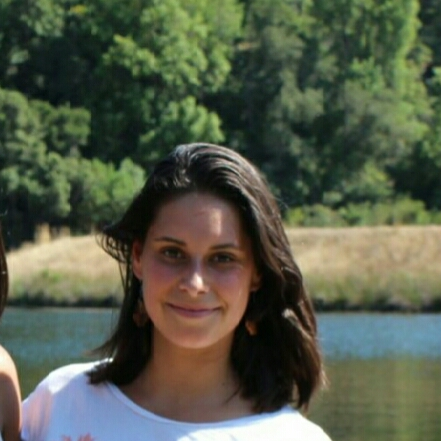
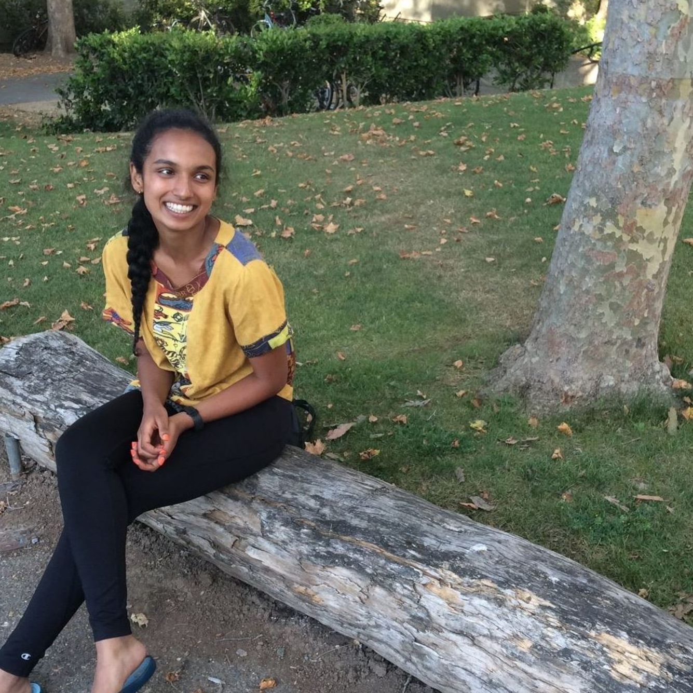

Angelica
Angelica is from Antioch, California and is a junior at Freedom High School. She is passionate about music, literature, dogs, and social justice. Her favorite pastimes are playing instruments, singing, and petting all the pups she encounters. She hopes to develop upon her new skills she’s learned this summer and to use them to better her community
Anoushka
Anoushka attends Palo Alto High School and is a junior. Outside of school, she participates in theatre, yoga, broadcast journalism, piano, and singing. She has a new found love of coding and web design and she hopes to continue bettering people's mental health and everyday lives with computer science more in the future.
Caity

Caity is a cheerful junior who attends Palo Alto High School. In school she is an active member on her school’s Speech and Debate team and Cross Country team. Her love for logic fuels her curiosity in learning how to code and she is so grateful she was able to participate in Girls Who Code. She is known for her mildly unhealthy obsession with dogs, burritos and her constant ukulele playing.
Carmen
Carmen is a senior in Madrid, Spain studying in the IB program. She loves sports, reading, spending time with friends, and travelling. She is passionate about math and technology, and is excited to continue learning with experience around the world.
Naina
Naina has lived in Beijing, China for the past 12 years, and is a senior who attends the International School of Beijing. She enjoys Speech, reading fantasy novels, and is an avid space enthusiast. She is excited to continue to gain coding skills in the future, and hopes to study physics in college.